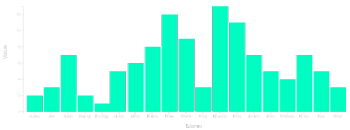

Bar Chart
A chart with rectangular bars with lengths proportional to the values that they represent.
Donut Chart

A chart identical to a pie chart, with the exception of a blank center and the ability to support multiple statistics at once.
Bivariate Area Chart
A chart that shows how two variables interrelate in the form of an area
Grouped Bar Chart
A chart that displays multiple bars grouped together.
Line Chart
A chart which displays information as a series of data points called 'markers' connected by straight line segments.
Multi-Line Chart
A chart which displays multiple y values for one given x value to create seperate lines.
Pie Chart
A circular chart divided into sectors, illustrating numerical proportion.
Scatterplot
A type of chart using Cartesian coordinates to display values for two variables for a set of data.
Infographics